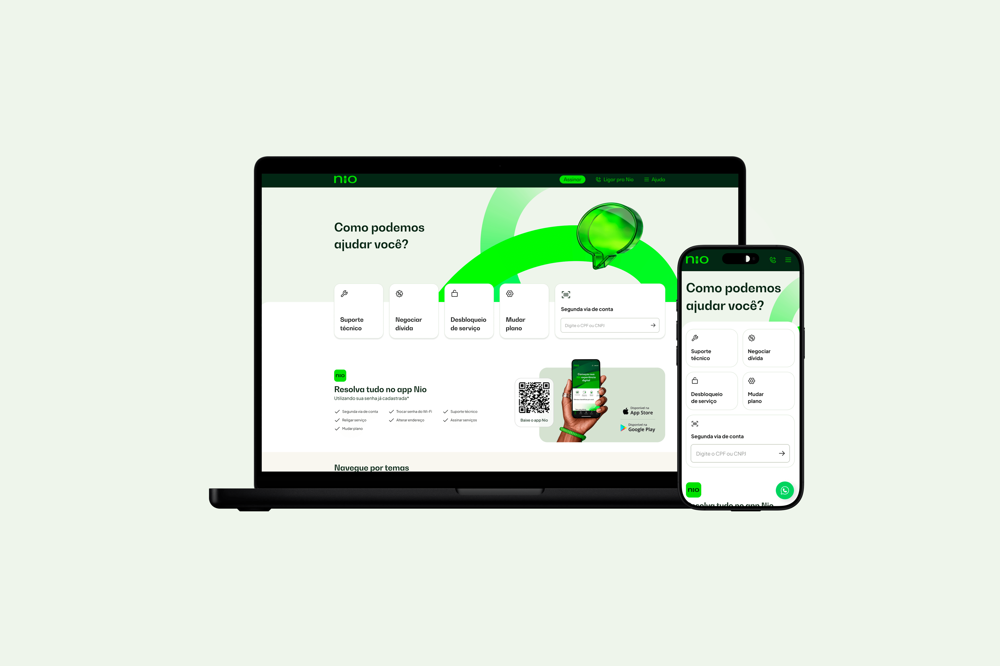

My works

Nio Help Center
Help Center for Nio to centralize support and improve self-service with FAQs, tutorials, and troubleshooting guides.

Portfolio website
This portfolio website was my first project as a 'developer.' Since I had been needing my own website for some time, I took the opportunity to learn coding—something I’ve always been interested in—while applying my design skills more effectively.

banQi
The banQi aplication provides trust and convenience for fulfilling your consumer dreams through quick and accessible personal loans.

Kaspersky
Kaspersky gaming landing page study case.